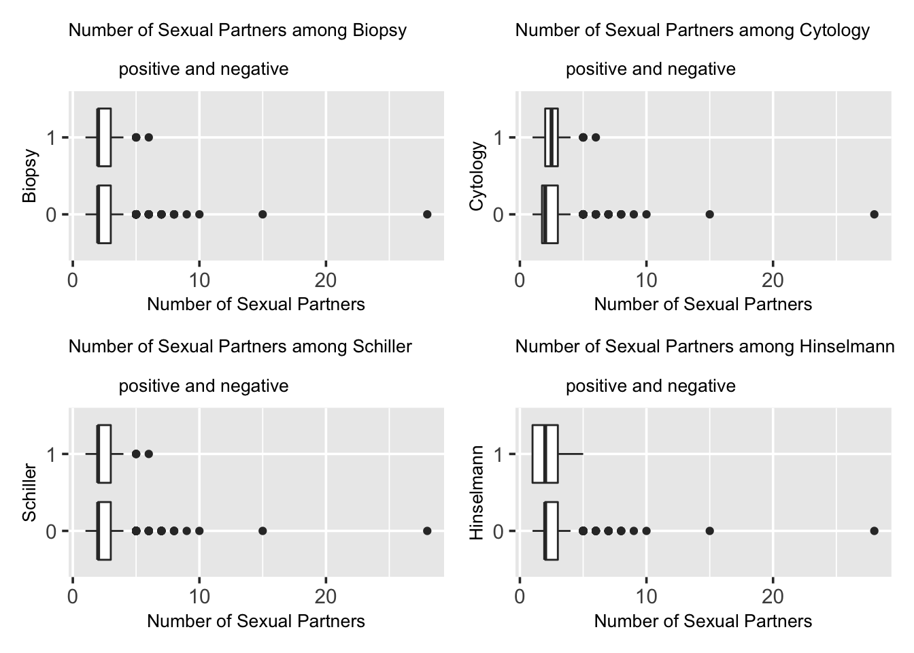
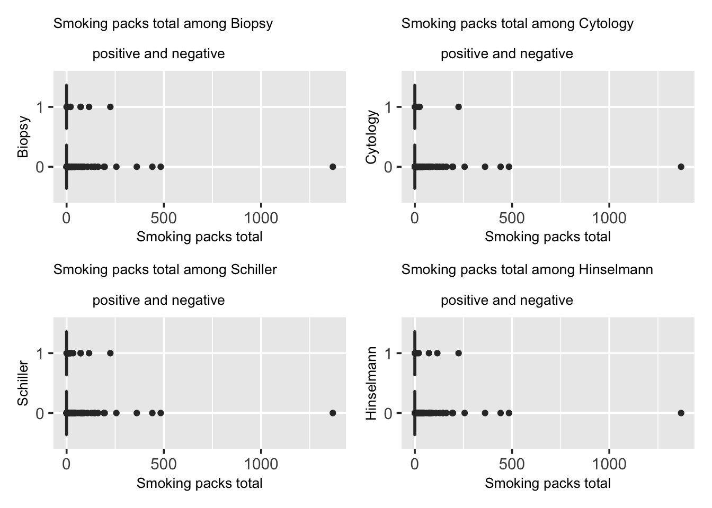
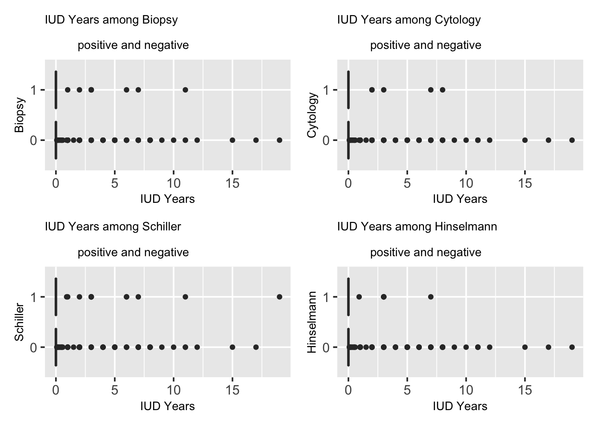
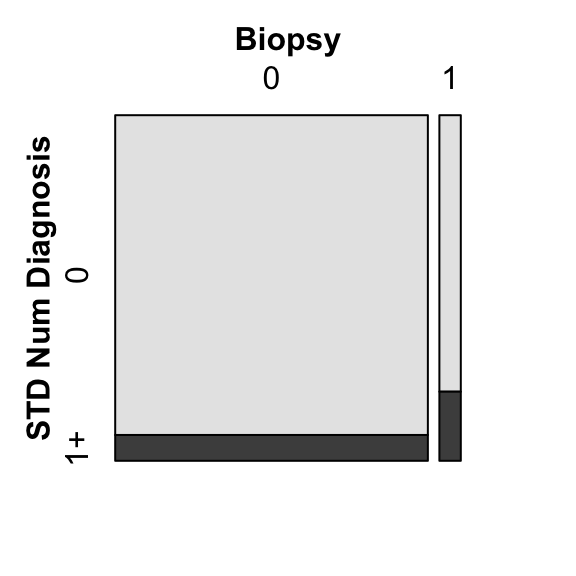
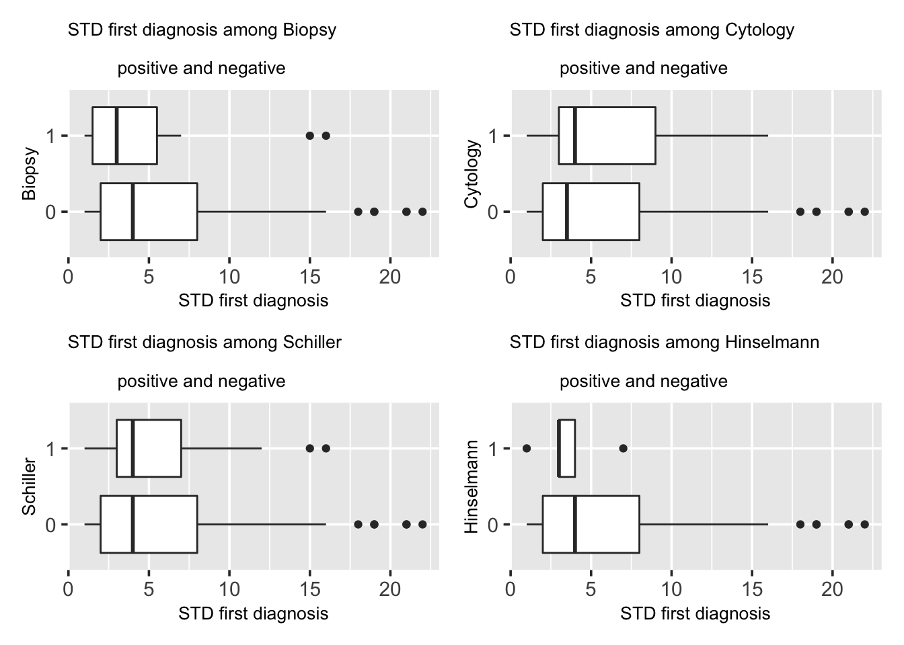

Chapter 5 Results
5.1 Age
Many cancer diseases relate with age, that older people have higher risks. Is this consistent for cervical cancer in this data set?
The chance of one’s having cervical cancer does not seem to have an obvious connection to one’s age from the four tests. From the graphs, the age overlapping rate is quite high between the two groups. The test results that came out with “0” have more outlines and those test results with “1” are more concentrated around the whole IQR, this might result from the fact that the 1/0 ratio in our data is very small. Since, every median line of “1” box looks close to the median line of “0” box or lie outside of the whole IQR of box “0”, there is unlikely to have a difference between the age factor and cervical cancer. From the graphs, we can also observe that the median of “1” is slightly higher than “0”, meaning that the median of the group was tested with cervical cancer has a slightly higher age than those who do not have the disease.
There are indeed differences between the four different diagnosis method and that results in the differences in the plot. The age range of patients diagnosed with cervical cancer with cytology and Hinselmann is less than that of patients without cervical cancer. However, with biopsy and Schiller, the age range between the two groups are similar.
We also see lots of outliers who are the elder patients, which could be a result of many patients come to hospital when they are old, when their body functions badly, while younger people will not go to doctors until urgent symptoms.

5.2 Number of Sexual Partners
Does number of sexual partners relate with cervical cancer? How do the 4 different ways of disease diagnosis show differences?
From the graphs, the Biopsy results and the Schiller results are very similar. However in Cytology results, the “0” box lies outside the “1” box, indicating there is likely to be a difference between the two groups. In all 3 tests, the median line of the “1” box seems close to the median line of “0” box except the Cytology graph. Their results and indications are quite consistent with each other, implying very little differences between the two groups.

5.3 First sexual intercourse (age)
Does first sexual intercourse time correlate with cervical cancer?
Demonstrated by the graphs, in all 4 tests, the median line of the “1” box seems to overlap with the median line of “0” box. Additionally, the two boxes in each graph has very high overlapping area, and they are very similar. This indicates that there is very unlikely to be a difference between the two groups, namely, very little connection between the factor of age of first sex intercourse and the chance of getting cervical cancer.
5.4 Num of pregnancies
Pregnancy and giving birth affects cervical tissue in many ways. Would number of pregnancy relate to cervical cancer chances?
The bar plots shown in the following four tests all present a right-skewed trend with fewer people having high number of pregnancies. Both groups have high concentration of 1 to 3 number of pregnancies. The distributions for all four graphs are similar, however, it is clear that the sample size of the group “1” is much smaller than the group “0” with a magnitude difference.
5.5 Smoking
Smoking is related to many diseases and is seen as one of the most common factors to severe diseases including lung cancer and hear diseases. Does smoking relates to Cervical Cancer as well?
In the following part, we present a mosaic plot between boolean variables of smoking and biopsy results. In Biopsy test, the number of people who were diagnosed with cervical cancer or group “1” is roughly 10 times of that of those who were not, or the group “0” data. People who do not smoke is much more than people who smoke in this survey. In the group “1”, the portion of people who smoke is slightly higher than of the the groups “0”, but both are around 10 percent of the entire group.
We calculate total packs of cigarettes smoked by using the equation where smoke years times Smoke packs per year. Presented by the graphs, we can clearly see that the most of the people smoke 0 packs of cigarettes since the IQR area of all the graphs are located at origin. And the people who were not diagnosed with cervical cancer or the group “0” has more outlines than those who were or the group “1”. There is not clear difference between the two groups, indicating there is little relation between the factor of number of total packs of cigarettes smoked and the chance of getting cervical cancer.
The outliers, which represents the total number of packs of cigarettes that one smoked, might be a result of that most people who took the survey do not smoke, as less percentage of female smoke, compared to male. When there are participants who do smoke, their total number of packs of cigarettes would be out of range under this comparison.

5.6 Hormonal Contraceptives
Hormonal Contraceptives are birth control methods, considered as safe and reliable ways to prevent pregnancy for most people. Would Hormonal Contraceptives be a factor for cervical cancer?
In the following graph, we have a mosaic plot between boolean variables Hormonal Contraceptives in biopsy results. In Biopsy test, the number of people who were diagnosed with cervical cancer or group “1” is roughly 10 times of that of those who were not, or the group “0” data. In the group “1”, the portion of people who smoke is slightly higher than the the groups “0”, but both are around 60 percent of the entire group.
We investigate further on number of years of using Hormonal Contraceptives and its relation with cervical cancer. Shown by the graphs, in theses tests, the median line of the “1” box seems to overlap with or very close to the median line of “0” box, except for Cytology test having a smaller median in label “1” box. Additionally, the two boxes in each graph has very high overlapping area, and they are very similar. This indicates that there is very unlikely to be a difference between the two groups, namely, very little connection between the factor of years of using Hormonal Contraceptives and the chance of getting cervical cancer.
5.7 IUD
An IUD is a tiny device that’s put into one’s uterus to prevent pregnancy. It’s long-term, reversible, and one of the most effective birth control methods. However, it is an extremely painful process and would make periods become heavier, more painful and longer. Question here would be if IUD relates with cervical cancer.
In the following graph, we have a mosaic plot between boolean variables Hormonal Contraceptives in biopsy results. In Biopsy test, the number of people who were diagnosed with cervical cancer or group “1” is roughly 10 times of that of those who were not, or the group “0” data. In the group “1”, the portion of people who had IUD seems to be higher than the the groups “0”, but both are around 10 to 20 percent of the entire group.
We investigate further on number of years of using IUD and its relation with cervical cancer. Demonstrated by the graphs, we can conclude that the most of the people spend 0 years using IUD since the IQR area of all the graphs are located at origin. And the people who were not diagnosed with cervical cancer or the group “0” has more outlines than those who were or the group “1”. There is not clear difference between the two groups, indicating there is little relation between the factor of number of years of using IUD and the chance of getting cervical cancer.

5.8 STDs
Sexually transmitted diseases (STDs), or sexually transmitted infections (STIs), are infections that are passed from one person to another through sexual contact. How does STDs relate to cervical cancer? Is it a possible factor?
In the following graph, we have a mosaic plot between boolean variables STD in biopsy results. In Biopsy test, the number of people who were diagnosed with cervical cancer or group “1” is roughly 10 times of that of those who were not, or the group “0” data. In the group “1”, the portion of people who had STD seems to be around 25%, which is higher than the the groups “0”, which seems to be around 7%.
In the following graphs, we check if STD number correlates with cervical cancer by presenting a mosaic plot between boolean variables STD and biopsy results. The bar plots shown in the following four tests all present a right-skewed trend with both groups have most people clustered at origin. The distributions for all four graphs are similar, however, it is clearly that the sample size of the group “1” is much smaller than the group “0” with a magnitude difference. Since the distributions of both groups are ver similar, this indicates little differences between, namely, there is little connection between the STD number and the chance of getting cervical cancer.
We would then look into a collection of different STDs and their correlation with cervical cancers.
Due to data scarcity, most of the specific STDs does not have sufficient cases for us to compare the results. What we have in the below plot is a bar plot on percentage comparison of patient with cervical cancer from group STD0, who are diagnosed with no the specific STD, and group STD1, who have that specific STD. We see an increase in percent of cervical caner in group STD1, which could be the evidence for the claim that condylomatosis,vulvo-perineal condylomatosis and HIV are diseases relate to cervical cancer that would bring higher risks.

We will also check STD Number of Diagnosis, to find if it is related with cervical cancer.
In the mosaic plot below, we observe that for cervical cancer patients, about 20% of them have been diagonsed 1 times or more. And for non cervical cancer group, it has about 2% diagnosed 1 times or more. This might hint the claim that number of STD diagnosis correlates with cervical cancer in some ways.

Since number of diagnosis of STD seems to relate to cervical cancer, we keep test on first time diagnosis (time till now) of STD, last time diagnosis (time till now) and their relation to cervical cancer.
In the boxplot below, we observe that in biopsy and Hinselmann tests, group1, who are cervical cancer patients, have later first diagnosis. However, in cytology and Schiller tests, group1 have earlier first diagnosis. There are outliers in both groups with high time period value, meaning that the first diagnosis time for these patients are much earlier. So with conflicting results, we cannot decide on whether first time diagnosis of STD relates to cervical cancer.

In the boxplot below, we observe that in biopsy and Hinselmann tests, group1, who are cervical cancer patients, have more recent last diagnosis. However, in cytology and Schiller tests, group1 have less recent last diagnosis. There are outliers in both groups with high time period value, meaning that the last diagnosis time for these patients are much earlier. So with conflicting results, we cannot decide on whether last time diagnosis of STD relates to cervical cancer.